Alvanor Guide: Sacred Grove Guardian for Hero Wars Alliance
- By: Alexandre Domingos. .
Welcome, Champion! Ever dreamed of commanding a front-line guardian who wields the ancient power of runes to heal allies, shield the team, and punish enemies all at once? Meet Alvanor, the sacred protector of the Grove. This enigmatic druid channels nature's raw energy through mystical runes, making him one of the most versatile Support heroes in Hero Wars Alliance. His ability to reduce incoming damage for the entire team while keeping everyone healthy is nothing short of extraordinary.
But Alvanor's true power goes far beyond simple healing. With Legendary Relics, he gains the devastating Rune of Wind that slashes your team's skill cooldowns, and the Rune of Infinity that extends every buff he casts. If you want a hero who grows stronger the longer the fight lasts and turns your Nature team into an unstoppable force, dive into this complete guide!
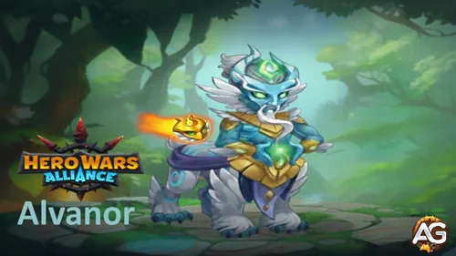
Who Is Alvanor in Hero Wars Alliance?
Alvanor is a powerful Support hero from the Way of Nature faction, standing in the Front Line as a guardian of the sacred Grove. He channels ancient runes to heal his allies, reduce incoming damage, and deal magic damage to enemies. His Intelligence-based kit makes him an ideal cornerstone for any Nature-centric team composition.
- Main Class: Support
- Main Role: Healer / Damage Reducer / Team Buffer
- Position: Front Line
- Main Stat: Intelligence
- Faction: Way of Nature
- How to get Soul Stones: Heroic Chest, Special Events
- Synergy: Byrna, Mushy, Mojo
- Hydra Tier List: S
Alvanor's primary function is to reduce damage taken by the entire team through his Rune of Earth while maintaining allies' health with Rune of Life. His unique mechanic of doubling healing effectiveness for Nature heroes makes him the backbone of Way of Nature compositions. With Legendary Relics, he gains cooldown reduction and effect duration extensions that turn him into a relentless engine of support.
As an Intelligence hero, every point of Intelligence grants him three points of Magic Attack, one point of Magic Defense, and one extra point of Physical Attack. Investing in his main stat boosts virtually every skill in his arsenal, making him scale exceptionally well into the late game.
Alvanor Pros and Cons - Hero Wars Alliance
✅ Pros
- Massive Team Damage Reduction: Rune of Earth reduces damage from basic attacks for all allies, and the Legendary enhancement extends this to skill damage too — one of the strongest defensive buffs in the game.
- Double Healing for Nature Heroes: Rune of Life doubles healing effectiveness for all allied Nature heroes regardless of the healing source, making Nature teams incredibly resilient.
- Cooldown Reduction Aura: Rune of Wind (Legendary) reduces allies' skill cooldowns by 20%, accelerating your entire team's rotation and Ultimate timing.
- Self-Extending Buffs: Rune of Infinity (Legendary) adds 3 seconds to all of Alvanor's effects, amplifying every rune he casts without extra cost.
- Front Line Durability: As a Support on the Front Line, Alvanor absorbs pressure while providing utility that back-line supports cannot match.
❌ Cons
- Vulnerable to Anti-Magic Heroes: Cornelius and Phobos specifically target high Intelligence and Magic Attack heroes, making Alvanor a prime target for their devastating abilities.
- Faction-Dependent Synergy: His strongest buffs (doubled healing, permanent Rune of Earth) only apply to Way of Nature heroes, limiting his versatility in mixed-faction teams.
- Lower Direct Damage: While he deals magic damage, his primary value is utility and defense — teams needing raw burst damage need to pair him with dedicated DPS heroes.
- Slow Ramp-Up: His strength grows as more runes activate; in extremely fast battles, he may not reach full efficiency before the fight is decided.
Alvanor — Talisman Max Stats Comparison
| Stat | Talisman of Runes | Talisman of Visions |
|---|---|---|
 Intelligence Intelligence
|
17,942
|
15,942
|
 Agility Agility
|
3,346
|
3,346
|
 Strength Strength
|
3,753
|
3,753
|
 Health Health
|
963,578
|
782,078
|
 Physical Attack Physical Attack
|
29,542
|
27,542
|
 Magic Attack Magic Attack
|
184,951
|
178,951
|
 Armor Armor
|
18,884
|
38,684
|
 Magic Defense Magic Defense
|
37,050
|
35,050
|
 Toughness Toughness
|
930
|
930
|
|
Magic Reflection
|
3,656
|
3,656
|
 Magic Penetration Magic Penetration
|
48,178
|
48,178
|
 Magical Crit Hit Chance Magical Crit Hit Chance
|
486
|
4,486
|
 Crushing Crushing
|
1,084
|
1,084
|
Alvanor Talisman Guide Hero Wars Alliance
Choosing the right talisman can be the difference between victory and defeat. Unlike skins, which always contribute their stat bonus regardless of which one you equip, talismans only give their bonus when actively equipped. Alvanor has two talismans — Talisman of Runes and Talisman of Visions — and understanding when to use each is key to maximizing his impact in every battle scenario.
Talisman of Runes
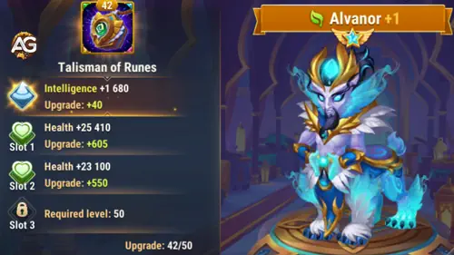
The Talisman of Runes is Alvanor's best overall talisman for most battle situations. Its main stat grants +2,000 Intelligence, which translates into a massive multi-stat boost because Intelligence is Alvanor's primary stat. Each Intelligence point grants three points of Magic Attack, one point of Magic Defense, and one extra point of Physical Attack. That means this talisman alone provides +6,000 Magic Attack, +2,000 Magic Defense, and +2,000 Physical Attack just from the main stat.
The three reroll slots all roll Health, reaching up to +60,500 per slot. Treat these three slots as one combined reroll: the only thing that matters is the total Health bonus of +181,500. For a Front Line hero like Alvanor, this is an enormous survivability boost that lets him stand firm and keep casting runes longer.
Why is this the best pick? Alvanor's Rune of Earth damage reduction formula (55% Mag.atk. + 4,800), Rune of Life healing (12% Mag.atk. + 2,040), and Runes of Ice damage (65% Mag.atk. + 12,000) all scale with Magic Attack. The +6,000 MA boost from this talisman directly increases every rune's effectiveness, while the +181,500 Health keeps him alive to cast them.
|
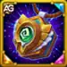 Talisman of Runes |
Total Main Stat |
|---|---|
|
Intelligence +2,000 |
+6,000 Magic Attack +2,000 Magic Defense +2,000 Physical Attack |
| Slot 1 | Slot 2 | Slot 3 | Total Reroll Bonus |
|---|---|---|---|
|
Health +60,500 |
Health +60,500 |
Health +60,500 |
Health +181,500 |
Talisman of Visions
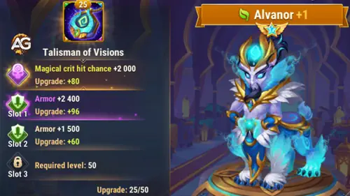
The Talisman of Visions takes a different approach. Its main stat grants +4,000 Magical Crit Hit Chance, which can occasionally amplify Alvanor's magic damage output with critical hits. However, this stat does not directly improve his healing or damage reduction formulas.
The three reroll slots offer Armor, up to +6,600 per slot, totaling +19,800 Armor. This gives Alvanor significantly better physical damage resistance (38,684 total Armor vs. 18,884 with Runes).
Use the Talisman of Visions in niche scenarios where you face heavy physical damage teams and Alvanor needs extra Armor, or when paired with heroes that benefit from magic critical hits. In most standard battles, however, the Talisman of Runes is the superior choice due to the massive Intelligence, Magic Attack, and Health bonuses.
|
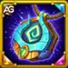 Talisman of Visions |
Total Main Stat |
|---|---|
|
Magical Crit Hit Chance +4,000 |
+4,000 Magical Crit Hit Chance |
| Slot 1 | Slot 2 | Slot 3 | Total Reroll Bonus |
|---|---|---|---|
|
Armor +6,600 |
Armor +6,600 |
Armor +6,600 |
Armor +19,800 |
Alexandre Tips: For 90% of battles, equip the Talisman of Runes. The +2,000 Intelligence (+6,000 Magic Attack) directly scales Alvanor's healing, damage reduction, and damage formulas. The +181,500 Health from rerolls is essential for a Front Line hero. Only switch to the Talisman of Visions when facing heavy physical teams where the +19,800 Armor makes the survival difference.
Alvanor Legendary Relic Skills Upgrade Priority - Hero Wars Alliance
Relics empower heroes by granting them new abilities while boosting existing ones. Beyond skill improvements, Relics also enhance two secondary stats of each hero. The stats boosted depend on how that particular hero's skills formula scale. Here is how to prioritize Alvanor's skills to turn the Sacred Grove Guardian into an unstoppable support force!
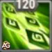
1st – Runes of Ice
This is Alvanor's Ultimate Ability. He conjures 5 Runes of Ice in front of himself and launches them at enemies. Each rune flies toward the nearest enemy, dealing magic damage and slowing the target. Think of it as a volley of frozen projectiles that scatter across the battlefield, punishing multiple enemies at once. The slow effect disrupts enemy attack speed and movement, buying precious time for your team. The damage per rune is calculated as 132,218 (65% Mag.atk. + 12,000). The chance to slow is lowered if the target's level is above 120.
Formula with Talisman of Runes
- Damage per Rune: Magic Damage: 132,218 (65% × 184,951 + 12,000)
Formula with Talisman of Visions
- Damage per Rune: Magic Damage: 128,318 (65% × 178,951 + 12,000)
Skill Animation Info
- Animation delay: 1.42 seconds
- Keywords: Slow, Magic Damage
- Note: Chance to slow is lowered if the target's level is above 120
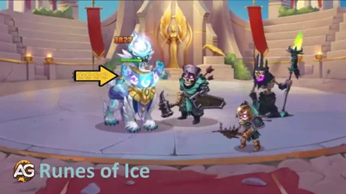
Evolution Priority: Medium High – While the AoE damage and slow are valuable for crowd control and disrupting enemies, Alvanor's primary value lies in his defensive and healing runes. Upgrade this after Rune of Earth and Rune of Life for balanced performance.
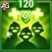
2nd – Rune of Life
Alvanor conjures a Rune of Life that heals all allies once per second. But here's the game-changing detail: while this rune is active, all allied Nature heroes are healed twice as effectively regardless of the source of healing! This means Byrna's heals, Mushy's heals, even artifact healing — everything doubles for Nature heroes. The healing per second is calculated as 24,234 (12% Mag.atk. + 2,040). For Nature heroes, this effectively becomes 48,468 per second.
Formula with Talisman of Runes
- Healing per second: Health Regen: 24,234 (12% × 184,951 + 2,040)
- Nature Heroes (doubled): Health Regen: 48,468
Formula with Talisman of Visions
- Healing per second: Health Regen: 23,514 (12% × 178,951 + 2,040)
- Nature Heroes (doubled): Health Regen: 47,028
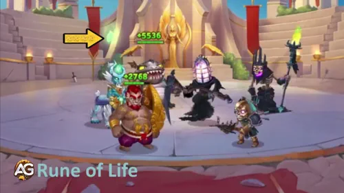
Evolution Priority: Very High – This is Alvanor's core sustain ability. The team-wide healing combined with doubled effectiveness for Nature heroes makes this his single most impactful skill for keeping your team alive. Max this first alongside Rune of Earth.
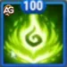
3rd – Rune of Fire
Alvanor calls upon the Fire Rune, smiting the two closest enemies and dealing magic damage to each. This is his primary offensive skill — a direct, punchy burst of fire damage that targets the enemies closest to him on the front line. The damage per target is 90,428 (45% Mag.atk. + 7,200).
Formula with Talisman of Runes
- Damage per target: Magic Damage: 90,428 (45% × 184,951 + 7,200)
Formula with Talisman of Visions
- Damage per target: Magic Damage: 87,728 (45% × 178,951 + 7,200)
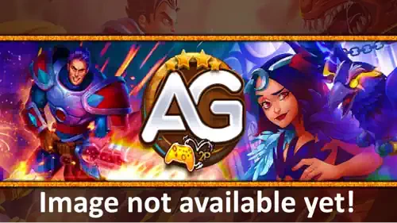
Evolution Priority: Medium – Decent burst damage, but Alvanor's main role is support and defense. Upgrade after his healing and damage reduction skills are maxed.
3rd – Rune of Fire (Enhanced) Legendary Relic
The Legendary enhancement adds a devastating damage-over-time mark. Hitting an enemy with Rune of Fire now applies a mark for 6.0 seconds. While the mark is active, it deals magic damage every second. This turns a burst skill into sustained pressure — the enemy keeps burning even after the initial hit! The mark's damage per second is 44,190 (20% Mag.atk. + 7,200). Over the full 6 seconds, that's a total of 265,140 additional burn damage per target.
Formula with Talisman of Runes
- Mark damage per second: Magic Damage: 44,190 (20% × 184,951 + 7,200)
- Total over 6 seconds: Magic Damage: 265,140
Formula with Talisman of Visions
- Mark damage per second: Magic Damage: 42,990 (20% × 178,951 + 7,200)
- Total over 6 seconds: Magic Damage: 257,940
Skill Animation Info
- Duration: 6.0 seconds
- Keywords: DoT, Magic Damage, Mark
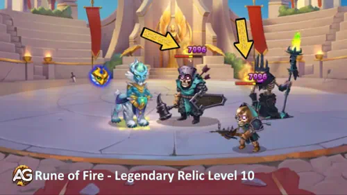
Evolution Priority: Medium High – The DoT mark adds substantial sustained damage over 6 seconds. Combined with Rune of Infinity extending the burn, this becomes a nice supplemental damage source. Prioritize after core defensive skills.
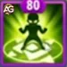
4th – Rune of Earth
This is arguably Alvanor's most important skill. Alvanor activates a Rune of Earth to protect his allies. While the rune is active, allies take decreased damage from basic attacks. Here's the crucial detail: the Rune of Earth is always active for Nature Heroes, meaning they permanently receive reduced basic attack damage throughout the entire battle! The damage reduction amount is 106,523 (55% Mag.atk. + 4,800). Imagine every basic attack your team receives being reduced by over 106,000 — that's the difference between surviving and falling.
Formula with Talisman of Runes
- Basic attack damage reduction: Damage Reduction: 106,523 (55% × 184,951 + 4,800)
Formula with Talisman of Visions
- Basic attack damage reduction: Damage Reduction: 103,223 (55% × 178,951 + 4,800)
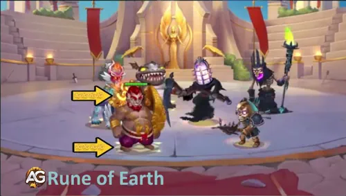
Evolution Priority: Very High – This is Alvanor's signature defensive ability. The permanent damage reduction for Nature heroes is unmatched in the game. Every point of Magic Attack you add increases the shield for your entire team. Max this alongside Rune of Life.
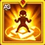
4th – Rune of Earth (Enhanced) Legendary Relic
The Legendary enhancement extends the Rune of Earth's protection to skill damage as well as basic attacks! This is a massive upgrade: now your allies take reduced damage from both basic attacks AND enemy skills. Way of Nature heroes still permanently take reduced damage from basic attacks, and the skill damage reduction applies when the rune is active. The damage reduction formula remains 103,223 (55% Mag.atk. + 4,800) for both types.
Formula with Talisman of Runes
- Skill + Basic attack damage reduction: Damage Reduction: 106,523 (55% × 184,951 + 4,800)
- Way of Nature permanent basic attack reduction: Damage Reduction: 106,523 (55% × 184,951 + 4,800)
Formula with Talisman of Visions
- Skill + Basic attack damage reduction: Damage Reduction: 103,223 (55% × 178,951 + 4,800)
- Way of Nature permanent basic attack reduction: Damage Reduction: 103,223 (55% × 178,951 + 4,800)

Evolution Priority: Very High – Extending the damage reduction to include enemy skills is a game-changer. This turns Alvanor from a strong anti-physical support into a universal damage reducer. Absolutely essential upgrade.
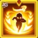
5th – Rune of Wind (New Skill) Legendary Relic
A brand-new skill granted by the Legendary Relic! Alvanor applies the Rune of Wind for 7.0 seconds to allies in front of him and to all heroes of the Way of Nature. While active, the rune speeds up their skill cooldown by 20%. Think about what this means: your entire Nature team — Byrna, Mushy, Mojo — all get their abilities back 20% faster. In a sustained fight, this translates to additional skill casts that can win the battle.
Formula with Talisman of Runes
- Cooldown Reduction: Buff: 20%
Formula with Talisman of Visions
- Cooldown Reduction: Buff: 20%
Skill Animation Info
- Duration: 7.0 seconds
- Keywords: Buff, Cooldown Reduction
- Note: Applies to allies in front of Alvanor and all Way of Nature heroes

Evolution Priority: High – A 20% cooldown reduction for 7 seconds (extendable to 10 seconds with Rune of Infinity) is an incredibly powerful team-wide acceleration. This allows your healers and DPS to cycle their abilities faster, significantly increasing team output in longer fights.
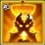
6th – Rune of Infinity (New Skill) Legendary Relic
The ultimate scaling ability! Rune of Infinity passively increases the duration of all effects applied by Alvanor by 3.0 seconds. This means Rune of Wind lasts 10 seconds instead of 7, Rune of Earth's active phase extends, and Rune of Fire's burn mark lingers for 9 seconds instead of 6. It's a simple, elegant multiplier that amplifies every other rune in his kit without requiring additional energy or activation.
Formula with Talisman of Runes
- Duration Increase: Passive: +3.0 seconds
Formula with Talisman of Visions
- Duration Increase: Passive: +3.0 seconds

Evolution Priority: High – This passive multiplier amplifies every rune Alvanor casts. An extra 3 seconds on Rune of Wind (20% longer cooldown reduction), Rune of Fire's burn (50% more ticks), and Rune of Earth's active phase makes this a high-value investment once his base skills are established.
Best Skin for Alvanor Hero Wars Alliance
Alvanor's skins directly boost the stats that power his rune formulas. Prioritize the skins that scale his healing and damage output first!
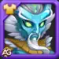
Default Skin
The Default Skin boosts Alvanor's primary attribute: Intelligence. Since Intelligence is his main stat, every point grants three points of Magic Attack, one point of Magic Defense, and one extra point of Physical Attack — amplifying virtually every skill he has.
- Intelligence: +1,365
- Magic Attack (from Int): +4,095
- Magic Defense (from Int): +1,365
- Physical Attack (from Int): +1,365
Evolution Priority: Very High – As an Intelligence-based support, maximizing this stat increases the effectiveness of Rune of Earth's damage reduction, Rune of Life's healing, and every other scaled formula. Always prioritize this skin first.
Spring Skin
The Spring Skin provides a direct Magic Attack bonus, which is the primary scaling stat for all of Alvanor's skill formulas — healing, damage, and damage reduction all grow with Magic Attack.
- Magic Attack: +10,650
Evolution Priority: Very High – This is the second-highest priority because +10,650 Magic Attack directly increases Rune of Earth's damage reduction by ~5,858, Rune of Life's healing by ~1,278 per second, and Runes of Ice's damage by ~6,923. A massive boost to his entire kit.
Lunar Skin
The Lunar Skin grants Armor, boosting Alvanor's physical damage resistance. As a Front Line hero, he faces direct physical attacks from enemy tanks and fighters.
- Armor: +10,650
Evolution Priority: Medium – Armor is useful for surviving physical damage, but it doesn't scale any of Alvanor's skills. Prioritize Intelligence and Magic Attack skins first for overall team impact.
Winter Skin
The Winter Skin provides a massive Health boost. For a Front Line Support who needs to stay alive to keep all runes active, Health is critical for longevity.
- Health: +106,645
Evolution Priority: High – A dead Alvanor means no runes, no healing, no damage reduction. This massive Health bonus ensures he survives long enough to keep his team protected. Upgrade after Default and Spring skins.
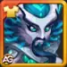
Dark Depths Skin+
The Dark Depths Skin+ provides Magic Penetration. As a Skin+ variant, it grants double the stats of a normal skin once the player acquires the upgraded version. The cost of skin stones to level up remains the same as a normal skin.
- Magic Penetration: +21,300
Evolution Priority: Medium High – Magic Penetration helps Alvanor's damage abilities (Runes of Ice, Rune of Fire) bypass enemy Magic Defense. The doubled stat value from Skin+ makes this a solid investment after core skins.
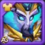
Angel Skin
The Angel Skin provides Magic Reflection, which returns a portion of magic damage back to attackers. While niche, it can punish magic-heavy teams.
- Magic Reflection: +2,960
Evolution Priority: Low – Magic Reflection is a minor stat that doesn't scale any of Alvanor's abilities and provides minimal tactical value compared to other skins. Only upgrade this last when all other skins are maxed.
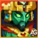
Tribal Skin+
The Tribal Skin+ provides Magic Attack, the primary scaling stat for all of Alvanor's skill formulas. As a Skin+ variant, it grants double the stats of a normal skin once the player acquires the upgraded version. With +21,300 Magic Attack, this skin directly boosts every rune formula — healing, damage, and damage reduction — making it a top-tier investment for maximizing Alvanor's overall impact.
- Magic Attack: +21,300
Evolution Priority: Very High – This is the highest raw Magic Attack bonus from any single skin. With +21,300 Magic Attack, it increases Rune of Earth's damage reduction by ~11,715, Rune of Life's healing by ~2,556 per second, and Runes of Ice's damage by ~13,845. A massive boost to his entire kit that should be prioritized alongside Default and Spring skins.
Alvanor Artifact Evolution Priority Hero Wars Alliance
Artifacts are core to Alvanor's power. Prioritize the ones that amplify his healing and damage reduction formulas for maximum team impact!
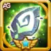
1st - Weapon Artifact: Soul of the Forest
When Alvanor uses his Runes of Ice (Ultimate) skill in combat, this artifact triggers an effect that gives a Magic Attack bonus to the whole team for 9 seconds. With a 100% activation chance, this is a guaranteed team-wide offensive boost every time Alvanor uses his Ultimate.
- Activation Chance: 100%
- Magic Attack bonus (team): +32,040
- Duration: 9 seconds
Evolution Priority: Very High – A guaranteed +32,040 Magic Attack for the entire team for 9 seconds is one of the most powerful weapon artifact effects in the game. It synergizes perfectly with Nature team compositions where multiple heroes scale with Magic Attack (Byrna, Mushy). This should always be upgraded first.

2nd - Book Artifact: Manuscript of the Void
The Book artifact provides a mix of Magic Penetration and Magic Attack, both crucial stats for ensuring Alvanor's damage skills penetrate enemy defenses while boosting his healing and reduction formulas.
- Magic Penetration: +10,680
- Magic Attack: +5,340
Evolution Priority: High – The combination of Magic Penetration and Magic Attack provides both offensive and utility value. Magic Attack scales his core formulas while Magic Penetration ensures his Runes of Ice and Rune of Fire damage are not wasted against tanky enemies.

3rd - Ring Artifact: Ring of Intelligence
The Ring directly boosts Alvanor's primary stat, Intelligence. Since each Intelligence point grants Magic Attack, Magic Defense, and Physical Attack, this is a multi-faceted stat boost.
- Intelligence: +3,990
- Magic Attack (from Int): +11,970
- Magic Defense (from Int): +3,990
- Physical Attack (from Int): +3,990
Evolution Priority: Medium High – While the Ring provides the biggest raw Intelligence boost, the Weapon's team-wide utility and the Book's penetration are prioritized first. The Ring solidifies Alvanor's overall stat scaling as the third upgrade step.
Alvanor Glyph Evolution Priority
Glyphs provide raw stat power that directly fuels Alvanor's rune formulas. Prioritize the stats that scale his healing and protection above all!
1st Glyph - Magic Attack
Magic Attack is the single most important stat for Alvanor. Every skill in his kit — Rune of Earth's damage reduction (55% MA), Rune of Life's healing (12% MA), Runes of Ice damage (65% MA), and Rune of Fire damage (45% MA) — scales directly with this stat. Maximizing it amplifies his entire support and damage toolkit simultaneously.
Level 80 Stats: +12,850 Magic Attack.
Evolution Priority: Very High (1st Overall) – This is the highest priority because every single rune formula uses Magic Attack as its primary scaling variable. No other glyph provides such a broad improvement across all abilities.
2nd Glyph - Health
Health is the foundation of Alvanor's Front Line durability. As a support hero standing in the front, he absorbs the brunt of enemy attacks. If he falls, all his runes deactivate — no healing, no damage reduction, no cooldown buffs. The massive Health pool ensures he stays alive long enough to keep all runes running.
Level 80 Stats: +122,800 Health.
Evolution Priority: High (2nd Overall) – Survival is the immediate second priority after scaling stats. A dead Alvanor provides zero value; a living one provides immense team-wide protection.
3rd Glyph - Magic Penetration
Magic Penetration allows Alvanor's damage skills (Runes of Ice, Rune of Fire) to bypass enemy Magic Defense. While he is primarily a support, his supplemental damage contributions — especially the Rune of Fire DoT mark — become significantly more effective with increased penetration.
Level 80 Stats: +12,850 Magic Penetration.
Evolution Priority: Medium High (3rd Overall) – Synergizes with his weapon artifact (Soul of the Forest provides Magic Attack team buff) and ensures his damage is meaningful rather than just absorbed by enemy defenses.
4th Glyph - Magic Defense
Magic Defense reduces the damage Alvanor takes from enemy mages and magic-based skills. In the current meta, many top-tier damage dealers use Magic Attack, making this a valuable defensive stat for a Front Line hero.
Level 80 Stats: +12,850 Magic Defense.
Evolution Priority: Medium (4th Overall) – A solid defensive glyph, but Health provides more raw survivability and Magic Attack provides more team value. Upgrade this after Magic Penetration.
5th Glyph - Intelligence
Intelligence is Alvanor's main stat. Leveling this glyph provides a multi-faceted boost — every point grants Magic Attack, Magic Defense, and Physical Attack. However, the raw Magic Attack Glyph provides a higher direct MA bonus, making this a complementary upgrade.
- Intelligence: +2,110
- Magic Attack (from Int): +6,330
- Magic Defense (from Int): +2,110
- Physical Attack (from Int): +2,110
Evolution Priority: Medium (5th Overall) – While Intelligence is his main stat, the Magic Attack Glyph gives +12,850 MA directly vs. +6,330 MA from Intelligence. This glyph's value is in the secondary Magic Defense and Physical Attack bonuses. Level it last among glyphs.
How to Counter Alvanor in Hero Wars Alliance
Alvanor's high Intelligence and Magic Attack make him vulnerable to heroes that specifically target these stats. Here are the heroes that can neutralize his rune-based support.
Cornelius

Cornelius directly targets the enemy with the highest Intelligence — and Alvanor, as an Intelligence-based support, is almost always that target. Cornelius smashes a monolith down dealing damage proportional to the target's Intelligence. Since Alvanor stacks massive Intelligence (17,942 with Talisman of Runes), Cornelius's damage against him is devastating. One well-timed monolith hit can eliminate Alvanor, shutting down all his runes instantly.
Phobos

Phobos stuns the enemy with the highest Magic Attack stat for 6.6 seconds and torments their body, frightening enemies near the target. The frightened enemies lose physical and magic attack for 12 seconds. Against Alvanor (Magic Attack: 106,646 with Talisman of Runes), Phobos locks him down completely — no rune casting, no healing, no protection for nearly 7 seconds. Worse, his Bonds of Darkness binds Phobos and Alvanor for 10 seconds, transferring all energy gained by Alvanor to Phobos. Additionally, Phobos conjures a shadow that decreases Alvanor's Magic Defense for 4 seconds, making him even more vulnerable to follow-up magic damage.
Alvanor Synergy in Hero Wars Alliance
Alvanor's Way of Nature affinity supercharges his teammates. These are the heroes that synergize best with his rune-based support kit.

Byrna is Alvanor's ultimate healing partner. Her Guardian Spirit deals Magic Damage to enemies while Byrna and nearby allies restore Health. Combined with Alvanor's Rune of Life that doubles healing effectiveness for Nature heroes, Byrna's healing output is amplified tremendously. Every tick of her Roar of Nature, Bear Cuddle, and Guardian Punch healing is doubled. Plus, Alvanor's Rune of Earth reduces the damage Byrna takes, and his Rune of Wind accelerates her skill cooldowns — creating an unstoppable healing engine.
Mushy

Mushy conjures inactive Shrooms that activate once their health is fully replenished for the first time. Here's where the synergy becomes incredible: Alvanor's Rune of Life heals all allies once per second, and doubles healing for Nature heroes — including Mushy's Shrooms! This means Shrooms activate faster, and once active, they can attack and use all of Mushy's learned skills. Alvanor's Rune of Earth also reduces damage they take, making the Shroom army significantly harder to destroy. Up to 5 Shrooms can be summoned, creating overwhelming battlefield presence.
Conclusion
Alvanor stands as one of the most versatile and impactful Support heroes in Hero Wars Alliance. His unique combination of team-wide damage reduction, persistent healing with doubled effectiveness for Nature heroes, cooldown acceleration, and effect duration extension makes him the cornerstone of any Way of Nature composition.
His Legendary Relics transform him from a solid support into an essential strategic asset. The enhanced Rune of Earth extending protection to skill damage, the Rune of Wind accelerating your team's skill rotation, and the Rune of Infinity amplifying every buff he casts create layers of advantage that compound throughout the battle.
Focus on the Talisman of Runes for most battles, prioritize Rune of Earth and Rune of Life for skill upgrades, and invest in Intelligence and Magic Attack through skins, artifacts, and glyphs. With the right build, Alvanor will turn your team into an indestructible force of nature.

Video Suggestion
Explore new skills with our featured guides!
Leave Your Opinion!
Did you like our Alvanor Guide for Hero Wars Alliance? Is there something you didn't understand or would like to suggest changes to? We invite you to join our comment section on the Alexandre Games Blog page. Feel free to express your opinion, clarify your doubts, and share your suggestions.
Click the button below to get started: